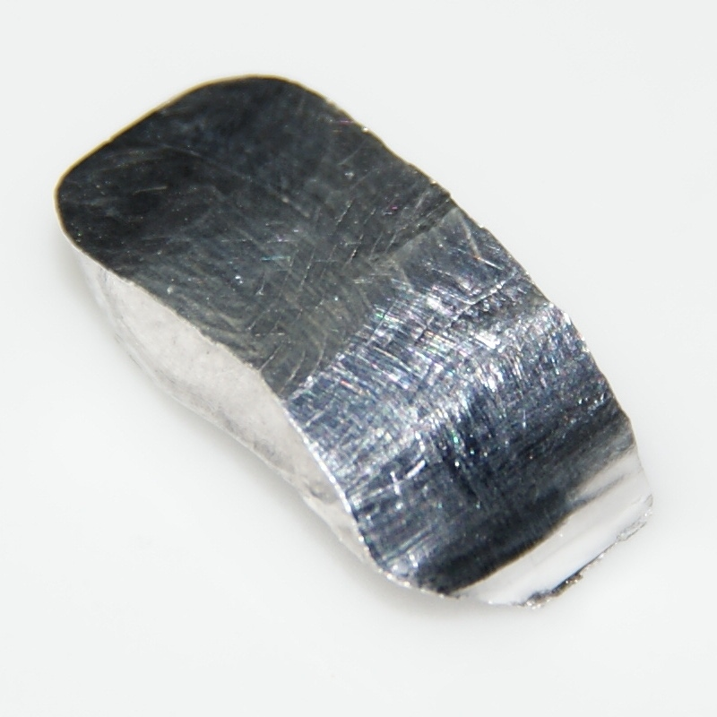

| Property |
Value |
| Element Name |
Indium |
| Symbol |
In |
| Group |
13 |
| Atomic Number |
49 |
| Atomic Mass |
115 u |
| Number of Isotopes |
30 (only 2 stable) |
| Melting Temperature |
157 °C |
| Boiling Temperature |
2072 °C |
| Density |
7.31 g/cm³ |
| Electronegativity |
1.78 (Pauling Scale) |
| Year of Discovery |
1863 (Ferdinand Reich) |
| Characteristics |
- Resistant to oxidation.
- Used in electronics for screen manufacturing.
|
| Main Producing Countries |
China, Japan, South Korea, Tanzania, Peru, Bolivia. |
| Health Effects |
- Relatively non-toxic but can cause lung and nervous system damage at high concentrations.
|
| Environmental Effects |
- Can contaminate soil and water resources.
- Considered toxic to some aquatic organisms.
|
